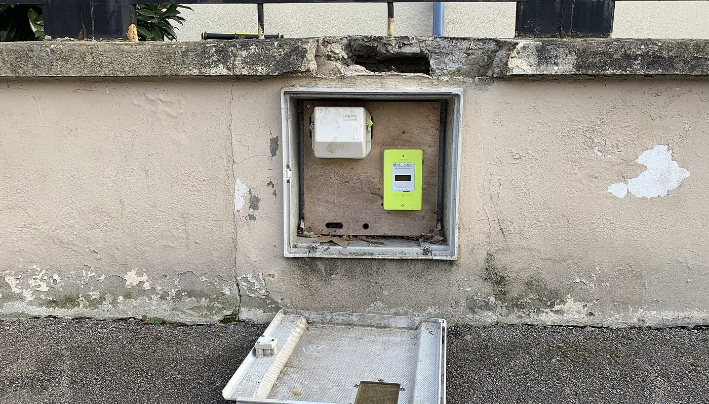
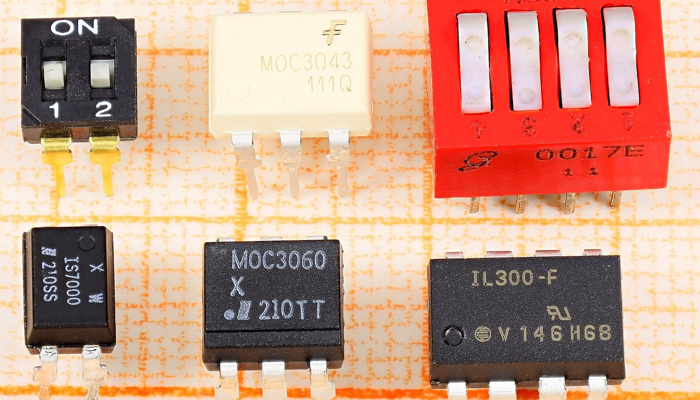

Compteur Linky · un lien partenaire Amazon.fr, étiqueté · sources relevées le 2 oct. 2026
Lire son compteur Linky dans Home Assistant : un module Zigbee à 59,99 €, un module USB à 24,90 € ou une carte ESP32 à 14,40 € — et les quatre pièges que les tutoriels taisent

Home Assistant ne lit pas un compteur Linky par radio : il lit sa sortie TIC, un port physique sous le cache du compteur. Trois routes existent, de 14,40 € la carte ESP32 à 59,99 € le module Zigbee autoalimenté — mais aucune ne fonctionne si le mode TIC du compteur a été basculé en standard, et presque aucun tutoriel ne commence par là.
Un lien partenaire Amazon.fr, étiqueté — voir comment ça marche Prix lus le 2 oct. 2026
En bref
- Trois routes, trois budgets. Module Zigbee à enficher dans le Linky (59,99 € TTC, en stock, revendeur domotique français, relevé le 2 oct. 2026), interface USB filaire (24,90 € et 26,40 € TTC chez le même revendeur), ou montage maison : une carte ESP32 à 14,40 € (Kubii, relevé le 2 oct. 2026) plus un optocoupleur et deux résistances que nous n'avons pas chiffrés.
- Le mode TIC décide de tout, et il n'est pas toujours choisissable. L'intégration Teleinfo officielle de Home Assistant n'accepte que le mode historique et le monophasé ; sa documentation conseille, si le compteur est en standard, de demander à Enedis la bascule inverse. Certains appareils du commerce, eux, exigent le standard (un utilisateur du forum francophone le rapporte parce qu'une autre marque le lui impose).
- Le standard fait grossir la trame. Un Linky triphasé en mode standard produit 53 étiquettes pour plus de 1 300 octets : au-delà du tampon de 1024 octets du composant ESPHome, le montage ne décode plus rien et n'affiche qu'un avertissement. C'est un plafond documenté, pas une légende.
- Le matériel neuf peut être en panne. Deux récits publics distincts rapportent un module Zigbee V2 qui ne remontait aucune valeur, avec un défaut matériel confirmé par échange — l'un des deux a même fini par faire tomber le réseau Zigbee entier au passage en mode standard.
- La voie « sans matériel » n'est pas du temps réel. Les données publiées par Enedis via son API arrivent à J+1 ; pour du suivi instantané, il faut la sortie TIC du compteur.
- Ce qui n'est pas chiffré : l'optocoupleur, les résistances et le boîtier du montage maison. Nous ne les avons pas relevés, donc ils n'apparaissent dans aucun total de cette page.
De quoi on parle exactement : la sortie TIC
Le Linky n'est pas un compteur communicant qu'on interroge par le réseau. Il expose une Télé-Information Client (TIC) : deux bornes (I1 et I2) sous le cache du compteur, qui débitent en continu une trame de texte contenant les index de consommation par tarif, la puissance apparente, le courant et l'état du compteur. C'est une liaison série, pas une API.
Il manque donc toujours la même pièce : quelque chose pour écouter ce port et le traduire en données exploitables par Home Assistant. D'où trois familles d'objets — un module du commerce alimenté par le compteur et intégré en Zigbee, un module filaire branché en USB près de la machine qui héberge Home Assistant, ou un montage à base de microcontrôleur.
Deux conséquences pratiques que personne ne met en avant :
- La vitesse change avec le mode, donc le firmware ou le montage doit correspondre au mode réellement actif sur votre compteur — c'est la première chose à vérifier, en pressant les boutons du Linky jusqu'à la page « MODE TIC ».
- Le montage n'est pas un simple fil. Le port TIC n'alimente pas votre électronique et n'accepte pas d'être relié directement : les tutoriels publics insistent tous sur un étage à optocoupleur. Nous ne chiffrons pas ce poste, faute de l'avoir relevé.
Les prix : ce qui est lu, où, et quand
Les montants ci-dessous ont été relevés le 2 octobre 2026, sur les pages de deux revendeurs : un distributeur domotique français (prix affichés TTC) et un revendeur français de cartes électroniques. Le dongle en dollars vient d'une boutique de créateurs et son prix est affiché en dollars : nous ne le convertissons pas.
Ce que coûte une lecture du Linky (€, prix relevés le 2 oct. 2026)
Barres proportionnelles aux montants ci-dessus, base à zéro. Tous ces prix sont TTC et viennent d'une même page de résultats d'un revendeur domotique français (sauf la carte ESP32, chez un revendeur de cartes), relevés le 2 octobre 2026. Le dongle à 12,50 $ et le montage maison ne figurent pas dans ce graphique : le premier n'est pas affiché en euros, le second comprend des composants que nous n'avons pas chiffrés.
| Où | Quoi | Prix relevé le 2 oct. 2026 | Ce que le prix ne comprend pas |
|---|---|---|---|
| Kubii (FR) | Carte de développement ESP32-WROOM-32 | 14,40 € | optocoupleur, résistances, boîtier, câble USB, alimentation |
| Domadoo (FR) | CARTELECTRONIC — interface téléinformation USB pour 1 compteur (USBTICLCV2) | 24,90 € TTC (derniers articles) | le câble jusqu'au compteur, un port USB libre près du compteur |
| Domadoo (FR) | GCE — module Téléinfo USB (MOD-USB-TELEINFO) | 26,40 € TTC (sur commande) | le câble, un port USB libre, pas de délai garanti |
| Domadoo (FR) | LiXee — compteur TIC sur rail DIN (LIXEE-TIC-DINV2) | 30,00 € TTC (en stock) | le rail, l'alimentation, la liaison série vers la box |
| Domadoo (FR) | LiXee — module TIC vers Zigbee 3.0 pour Linky, V2 avec antenne (ZLINKY-TIC-V2-ANT) | 59,99 € TTC (en stock, plus de 20 unités) | rien après achat : autoalimenté par le compteur — mais il faut une passerelle Zigbee |
| Domadoo (FR) | CARTELECTRONIC — interface téléinformation WIFI (WIFITIC) | 65,50 € TTC (sur commande) | alimentation, couverture WiFi jusqu'au compteur |
| Domadoo (FR) | SOMFY — capteur de consommation Zigbee pour compteur Linky (9029425) | 69,00 € TTC (en stock) | le distributeur précise qu'il faut une box TaHoma et un port TIC à 3 broches |
| Tindie (créateur) | Dongle « Wemos Teleinfo » (montage assemblé, projet ouvert) | 12,50 $ affichés (USD) | port, taxes éventuelles à l'import, alimentation ; prix non converti par nos soins |
La lecture honnête de ce tableau n'est pas « le DIY est moins cher ». La carte ESP32 à 14,40 € n'est pas un produit fini : il faut y ajouter un optocoupleur, deux résistances et un boîtier — que nous n'avons pas chiffrés, donc que nous ne mettons dans aucun total. Un module USB du commerce à 24,90 € est déjà assemblé, testé et documenté, mais il lui faut un câble jusqu'au compteur et une machine allumée à proximité. Le module Zigbee à 59,99 € est le seul qui n'exige aucun câble et n'ajoute aucune consommation près du compteur, puisqu'il se nourrit sur ses bornes — c'est ce que vous payez en plus, et rien d'autre.
Les quatre pièges que les tutoriels taisent
1. Le mode TIC décide si votre matériel fonctionne
C'est le point qui met en échec le plus de montages, et il est écrit noir sur blanc dans la documentation officielle de Home Assistant : l'intégration Teleinfo ne prend en charge que le mode historique, sur du monophasé. Si votre compteur est déjà en mode standard — ce qui arrive quand un opérateur ou un fournisseur le bascule, ou quand un autre appareil du foyer l'exige — la voie officielle ne fonctionne plus.
Attention à l'inverse : le standard a ses partisans, parce qu'il apporte des valeurs que l'historique ne donne pas. Un utilisateur du forum francophone explique avoir été obligé de passer en standard pour lire sa production photovoltaïque en instantané avec un autre appareil :
Autrement dit : le mode n'est pas un détail technique, c'est un arbitrage entre vos appareils. Vérifiez-le avant d'acheter, sur la page « MODE TIC » du compteur.
2. En mode standard, le montage maison devient capricieux — et pas qu'un peu
Deux faits mesurables, tous deux publics. D'abord la taille de la trame : un Linky triphasé en mode standard émet 53 étiquettes et plus de 1 300 octets, quand le composant ESPHome prévoyait un tampon de 1 024 octets. Résultat dans les journaux : « Internal buffer full », et aucune valeur exploitée. Ensuite les résistances du montage à optocoupleur, dont les valeurs « généralement préconisées » ne fonctionnent pas toujours :

3. Un appareil neuf peut être en panne, et le diagnostic prend des jours
Les retours publics sur le module Zigbee V2 le plus répandu ne sont pas des cas isolés : au moins deux utilisateurs différents rapportent, à quelques heures d'intervalle, un module neuf qui ne remonte rien, malgré une réinstallation complète, un firmware à jour et tous les réglages essayés.
La conséquence pratique est simple : achetez chez un vendeur dont le retour est facile, et n'engagez pas des soirées de réglage avant d'avoir testé un échange matériel. Ce n'est pas une critique d'un fabricant — c'est ce que disent les fils publics, et ça fait partie du budget.
4. La voie sans matériel n'est pas du temps réel — et le compteur n'est pas toujours accessible
Il existe une route gratuite : interroger les données publiées par Enedis. Elle a un défaut structurel, rappelé par les utilisateurs eux-mêmes :
Second obstacle, physique celui-là : dans un immeuble, le compteur est souvent au sous-sol. Un utilisateur le résume ainsi : « je suis en appartement et […] mon compteur se trouve à la cave au -1 et je suis au +2 », et les réponses du fil partent toutes du même constat — soit on tire un câble, soit on installe un point d'accès près du compteur, soit on renonce à la sortie TIC. Le prix affiché d'un module n'inclut jamais ce coût-là.
Trois routes, selon votre situation
Aucune de ces trois routes n'est « la bonne » : elles ne vendent pas la même chose. La seule erreur coûteuse est d'acheter un module sans avoir vérifié le mode TIC du compteur — c'est le geste qui annule tous les autres.
La checklist avant de commander
- Lire le mode TIC sur le compteur (boutons + / −, page « MODE TIC ») : historique ou standard. De ce seul mot dépend le matériel qui fonctionnera, et notamment l'intégration officielle de Home Assistant.
- Vérifier le type de Linky : le revendeur du module Zigbee le plus courant précise noir sur blanc qu'il n'est pas compatible avec les Linky ISKRA ITRON et LANDYS GYR ayant un port USB, parce qu'il n'y a que deux broches pour la téléinformation.
- Compter l'accessibilité du compteur : sous-sol, gaine, distance. Un module sans fil vaut souvent plus cher qu'un module USB uniquement parce qu'il évite un câble que vous ne pouvez pas tirer.
- Prévoir la passerelle Zigbee si vous prenez un module radio : sans coordinateur Zigbee, il ne sert à rien. C'est un poste que les prix de cette page ne comprennent pas.
- Sur un montage maison, choisir l'optocoupleur et les résistances en fonction du mode — et savoir que les valeurs recommandées ne fonctionnent pas toujours en standard, d'après les retours publics.
- En triphasé standard, vérifier le tampon mémoire du composant que vous utilisez : au-delà de 1 024 octets de trame, la lecture échoue silencieusement ou presque.
- Acheter là où le retour est simple. Les fils publics montrent que des unités neuves arrivent en panne : le vendeur compte autant que le prix. Et comparez le total port compris au moment de l'achat, pas sur un guide daté — y compris celui-ci.
Par où commencer, concrètement
Ces liens sont ceux des projets et des vendeurs cités. Aucun n'est affilié : ils sont là pour que vous vérifiiez les prix et les spécifications à la source.
- Comprendre la voie officielle : documentation de l'intégration Teleinfo de Home Assistant (mode historique, monophasé, adaptateurs USB reconnus automatiquement).
- Comprendre la voie ESPHome : composant teleinfo d'ESPHome — vitesses 1 200 / 9 600 bauds et paramètre
historical_mode. - Comprendre le protocole : la documentation publique d'Enedis sur les trames TIC est citée dans les fils du forum francophone (document Enedis) — c'est elle qui liste les étiquettes disponibles selon le mode.
- Voir les prix cités : interface téléinformation chez Domadoo (24,90 € à 69,00 € TTC le 2 octobre 2026) et carte ESP32-WROOM-32 chez Kubii (14,40 € le 2 octobre 2026).
Le réflexe qui évite le mauvais achat : lire le mode TIC du compteur, vérifier le modèle exact du Linky, choisir la route en fonction de l'accessibilité — et seulement ensuite regarder le prix.
Questions
Peut-on lire son Linky depuis Home Assistant sans rien acheter ?
Pas en temps réel. La sortie TIC est un port physique : il faut un adaptateur branché sur les bornes I1 et I2. La seule voie sans matériel passe par les données publiées par Enedis, disponibles à J+1.
Pourquoi mon module ne remonte rien alors que le compteur est bien un Linky ?
Trois causes reviennent dans les retours publics : le mode TIC ne correspond pas à ce qu'attend le logiciel ou le montage ; la valeur des résistances est mauvaise sur un montage maison en mode standard ; ou l'appareil est défectueux à la réception — un défaut matériel confirmé après échange est documenté publiquement pour deux unités neuves.
Historique ou standard : que choisir ?
Le mode historique est le terrain le plus sûr : c'est le seul que prend en charge l'intégration officielle de Home Assistant, en monophasé. Le standard donne plus de valeurs (dont la production photovoltaïque) et impose 9 600 bauds, une trame plus grosse et, en triphasé, un tampon mémoire plus large que le défaut. Changez de mode en connaissance de cause : la bascule se demande à Enedis.
Le module Zigbee est-il plus simple que le montage ESP32 ?
Plus simple à installer, oui : il s'enfiche dans le compteur et s'alimente dessus, sans soudure ni câble. Mais il exige une passerelle Zigbee, et les retours publics mentionnent des pannes matérielles et un réseau Zigbee qui peut tomber au passage en mode standard. Le montage ESP32 coûte moins cher en pièces et vous laisse la main sur tout — y compris sur les réglages.
Cette page contient-elle des liens affiliés ?
Oui, un. Depuis le 3 octobre 2026, cette page porte un lien partenaire Amazon.fr (Identifiant de suivi : honestswitch-21), étiqueté « lien affilié » avec rel=sponsored. Le prix et la disponibilité sont affichés par Amazon au moment du clic — nous ne les recopions pas. Aucun autre lien de cette page ne nous rapporte quoi que ce soit.
Comment cette page est faite
- Un lien affilié, et un seul. Depuis le 3 octobre 2026, cette page porte un lien partenaire Amazon.fr (Identifiant de suivi : honestswitch-21), étiqueté « lien affilié » avec
rel="sponsored", à l'endroit où il apparaît. Nous ne recopions ni prix ni disponibilité : ils sont affichés par Amazon au moment du clic. Aucun autre lien de cette page ne nous rapporte quoi que ce soit. - Les prix sont ceux que nous avons lus nous-mêmes, le 2 octobre 2026, sur les pages du revendeur domotique et du revendeur de cartes. Le dongle de créateur est affiché en dollars : nous ne l'avons pas converti en euros, précisément pour ne pas fabriquer un chiffre.
- Ce que nous ne savons pas est écrit comme tel : le prix de l'optocoupleur, des résistances et du boîtier du montage maison n'a pas été relevé, donc il n'apparaît dans aucun total ; nous ne donnons pas non plus de prix de passerelle Zigbee.
- Les avis cités sont publics et datés, avec le fil, la date et, quand il est connu, le pseudo de leur auteur. Ils sont reproduits tels quels, orthographe comprise, et ne sont pas des témoignages de clients de cette page.
- Nous ne fabriquons aucun avis, aucun témoignage et aucune statistique. Les limites techniques citées viennent des documentations officielles de Home Assistant et d'ESPHome, et d'un rapport de bug public du projet ESPHome.
- Corrections : si un prix a changé ou si nous nous sommes trompés, écrivez-nous, nous corrigeons et nous datons la correction.
Sources
- Documentation officielle de l'intégration Teleinfo de Home Assistant (mode TIC historique obligatoire, monophasé uniquement, adaptateurs USB reconnus automatiquement) — lue le 2 octobre 2026.
- Documentation officielle du composant teleinfo d'ESPHome (1 200 bauds en historique, 9 600 en standard, paramètre
historical_mode, pont à optocoupleur) — lue le 2 octobre 2026. - Rapport de bug public du projet ESPHome (n° 2060) : en mode standard, un Linky triphasé produit 53 étiquettes et plus de 1 300 octets, au-delà du tampon de 1 024 octets du composant — lu le 2 octobre 2026.
- Forum Home Assistant Communauté Francophone, fil « Aide sur info TIC compteur Linky avec esp32 » (messages des 10 et 27 juin 2025) : valeurs de résistances en mode standard, écart d'index constaté sur un module du commerce — lu le 2 octobre 2026.
- Forum Home Assistant Communauté Francophone, fil « Remontée info d'un compteur Linky » (messages des 31 octobre, 1er, 22 et 23 novembre 2024) : données Enedis à J+1, compteur au sous-sol, deux modules Zigbee V2 en défaut matériel, réseau Zigbee tombé au passage en mode standard — lu le 2 octobre 2026.
- Forum Home Assistant Communauté Francophone, fil « Linky TIC Historique vs Standard » (7 décembre 2023) : obligation de passer en standard pour lire la production photovoltaïque, renvoi au document Enedis — lu le 2 octobre 2026.
- Page de résultats « téléinformation » et page produit du module TIC vers Zigbee 3.0 V2 (référence ZLINKY-TIC-V2-ANT), revendeur domotique français : 24,90 € / 26,40 € / 30,00 € / 59,99 € / 65,50 € / 69,00 € TTC, disponibilités et avertissement de compatibilité ISKRA ITRON / LANDYS GYR — lues le 2 octobre 2026.
- Page de résultats « esp32 wroom », Kubii (FR) : carte ESP32-WROOM-32 à 14,40 € — lue le 2 octobre 2026.
- Page produit du dongle « Wemos Teleinfo », Tindie : 12,50 $ affichés (USD) — lue le 2 octobre 2026.
- Photos : compteur Linky dans son coffret — CC0, via Wikimedia Commons ; composants en boîtier DIP — Mister rf, CC BY-SA 4.0, via Wikimedia Commons.
Avis clients
Avis sur ce guide, publiés après vérification. Chaque avis négatif reçoit une réponse publique — c'est comme ça qu'on s'améliore.
Les premiers avis seront publiés ici dès que de vrais lecteurs en enverront.
Où acheter — lien partenaire
Le lien ci-dessous est un lien partenaire Amazon.fr (Identifiant de suivi : honestswitch-21). Si vous achetez en passant par lui, Amazon nous verse une commission : le prix que vous payez ne change pas. Nous ne recopions ni le prix ni la disponibilité, que vous voyez affichés par Amazon au moment du clic.
Voir « module téléinformation Linky » sur Amazon.fr lien affilié — commission pour nous, prix inchangé pour vous